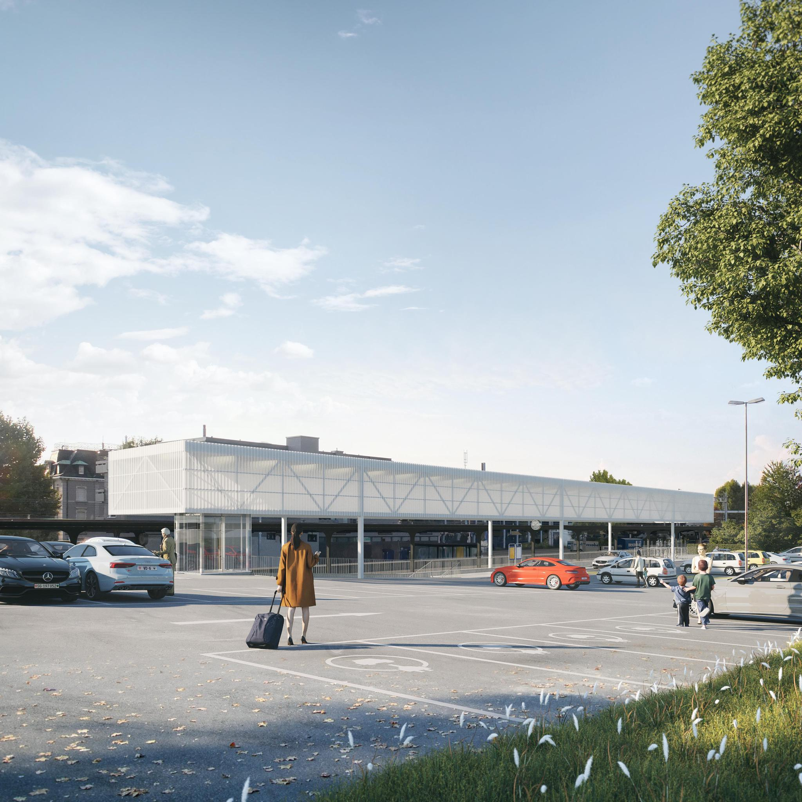

Umbau Bahnhof Küsnacht
Am Bahnhof Küsnacht befindet sich seit dem 19. September eine Baustelle. Mehrere Container wurden inzwischen aufgebaut und verschiedenste Baustellenfahrzeuge sind angefahren. Auf beiden Seiten der Gleise wird gearbeitet, sogar auf dem Perron und in der Unterführung. Dies kann nur bedeuten, dass es kein kurzes Projekt wird. Hier mischen die SBB und die Gemeinde mit. Nun stellt sich aber die Frage, was wird hier gemacht?

Geplant ist, die Treppen zu erneuern und beide Seiten der Unterführung mit je einer Rampe und einen Lift zu erweitern. Auch das Perron wird mit einer Rampe und einen Lift erschlossen, damit die Unterführung das Behindertengleichstellungsgesetz (BehiG) berücksichtigt und der Zugang einfacher ist. Gleichzeitig werden auch die Bereiche bei den Eingängen zur Unterführung aufgewertet, auf der Bergseite wird ein Dach gebaut und die Perronentwässerung und Beleuchtung in der Unterführung werden auch verbessert. Zuletzt, um laut der SBB passende «Synergien » zu nutzen, werden alle Gleise erneuert, die Abstellgleise verschoben und das Hilfsperron abgebrochen, damit die Platzverhältnisse optimal genützt werden können.
Schon 2017 wurde ein ähnliches Projekt vorgeschlagen, welches aber nie zustande kam, da es Teil einer vorgeschlagener grösseren Zentrumsentwickelung war, welches an der Urne scheiterte. Selbst dieser kleinere Eingriff in das Ortsbild erhielt grandiose 7 Rekurse, die sich gegen das geplante Dach richteten, welches viel voluminöser war als das zurzeit Geplante. Die Einsprechenden wurden bei der Überarbeitung einbezogen, fanden den jetzigen Vorschlag besser, und liessen ihre Rekurse fallen.
Diese Baustelle wird frühestens am 30. Oktober 2023 fertig sein, und bis dann werden Teile der Unterführung und auch ein grosser Teil des Parkplatzes Zürichstrasse gesperrt bleiben. Es wird auch jede Woche durchgehend während der Nacht gearbeitet.